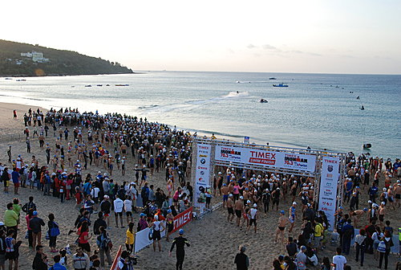
一、前言
以前參加過不少次鐵人三項51.5K的比賽，始終
沒有勇氣踏入更高層次的殿堂，這次要不是
IRONMAN第一次在台灣辦比賽，再加上高雄鐵人
隊其他隊友的強力鼓吹，大概還是會選擇當個觀
眾，但這次比完賽後的心得確是「不虛此行」，
我真慶幸當初做對了決定。
二、訓練
因為工作和家庭的關係，我實在沒有太多時間可
以好好練習，比較固定的練習時間，是星期一晚
上練習跑步，每次大概跑10到14公里，到了比賽
的前一個月，增加練習份量，練跑了3次的21公
里。游泳時間安排在每星期三，每次游1000到
1500公尺 ，但到比賽前一個月練習份量增加到
2100公尺 。騎腳踏車部分，大概就每2個星期，
跟鐵人隊從觀音山騎到旗山，來回大概60公里左
右，比賽前有去墾丁比賽場地練過2次車。說實
在的，以上的練習份量實在不足，但我抽降子的
時間練習，已經盡全力了，總不能為了搞鐵人，
搞到妻離子散的地步吧。賽前訓練的成績，跑21
公里大概要2小時10分，游2100公尺要48分，騎
車就沒特別算時間，因為每次跟每次落隊，鐵人
隊有些瘋子在領騎時可以騎到每小時45K以上，
實在超越吾人實力太多。
三、賽前補給
由上述賽前練習可知練習份量實在不足，在心虛
的情形下，只有迷信高科技能幫助完賽，首先考
慮要不要換計時車，但要挑一台自己喜歡，價錢
又可以接受的車子實在耗時費日，所以截至比賽
前都還沒找到自己可以接受的計時車，另外賽門
為了游泳加速買了件ORCA S2防寒衣，一件大概
5000元，還在忍受範圍內，所以也想購入一件，
但去鐵馬王購衣時，該款防寒衣早就賣完了，剩
下的衣服都7、8千起跳，衡量一下還是決定放棄
購買。高科技的既然沒搞頭，最後只有相信食
補，除了該買的BCAA、50﹪葡萄糖、Gel外，這次
經人推薦多買了亞培的營養補給品，就是給糖尿
病人吃的那種，小小一罐熱量特高，不過口感就
因人而異，實際適用結果，我個人感覺還好，但
好友史蒂芬說他喝了一罐，跑步時直接狂奔10K，
完全沒有倦怠感，所以大家就參考參考吧。
四、比賽當日（游泳1900公尺 ）
比賽當天大約5點50分到達現場，進入轉換區放
一下東西後，就到沙灘熱身，看到身旁眾多人都
穿著很殺的防寒衣，心裡有點怕怕的，本來還在
期待有人要上台致詞，有辣妹帶熱身操時，就有
廣播說要下水了，而且沒有分梯次，這下嚴重了
，趕快要衝到前方卡位時，哨聲一響，竟然開始
比賽了，大家一窩峰的都向海裡衝，我趕快跟著
大家一起往前衝，游泳時萬頭鑽動，我大概挨了
不下10次的悶棍，有一腳差點把我蛙鏡給踹掉，
我到後來眼眶痛了好幾天。最扯的是我竟然看到
有人在水中打人，運動精神實在差了點，這種比
賽爭先恐後本是正常，大家都是無心的，忍耐一
下渡過比賽就好。兩圈游完後，竟然耗時53分，
比自己練習時差多了，到現在也不知原因為何，
當下沒想這麼多，就繼續往T1邁進。
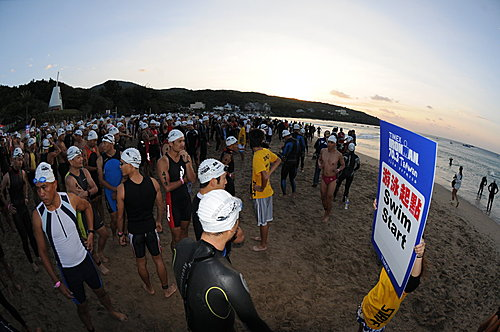
比賽前的寧靜，此時天還沒完全亮
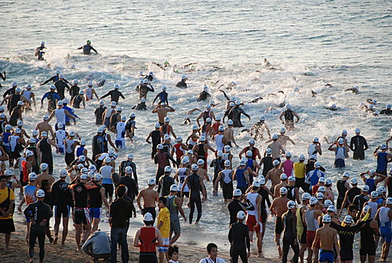
鳴槍後大家爭先恐後的入水
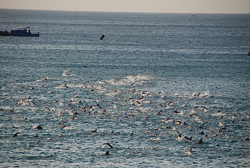
海上黑壓壓的游泳人群
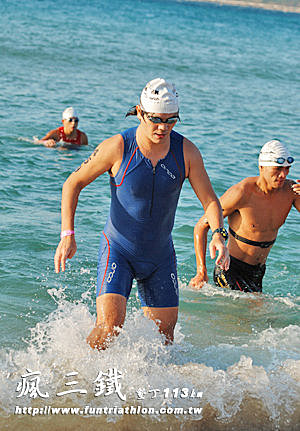
游泳從水中掙扎而起的一剎那

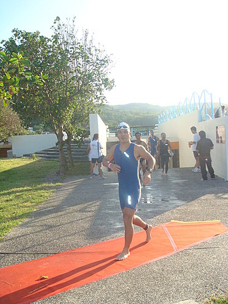
沿著紅毯邁向T1
五、腳踏車（90公里 ）
進到轉換區後，怕自己鐵人衣墊子部分太薄，就在
外面套了一件車褲，如此穿著，實在有損鐵人顏
面，但為了小屁屁著想，也只有硬著頭皮搞下去
了。騎車一出去都還蠻順的，關山上坡也還OK，
反正一切輕鬆騎，因為還要留力跑步，降子的想
法到經過悠活到海生館那條路時就轉念了，那邊
的風還真他媽的大阿，感覺比上坡還難騎，雖說
如此，第一圈平均時速大概還能維持在每小時30K
以上，後來到第二圈時狀況就來了，不知是體能
已耗盡還是平常練騎不夠，第二圈時明顯體能下
降，時速始終帶不上來，遇到逆風時，時速還會
掉到10幾公里，真是苦阿，好不容易撐回轉換
區，耗時3小時24分。
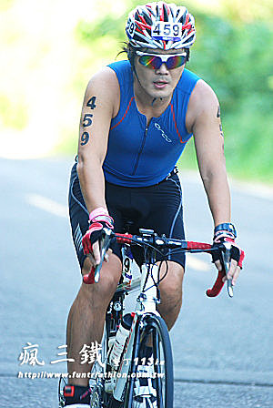
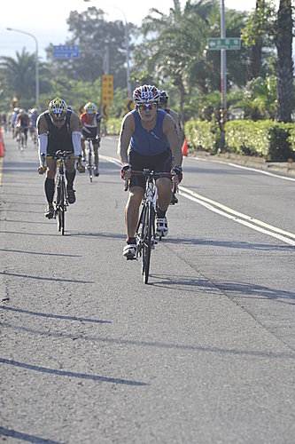

六、跑步（21公里）
進到最後跑步階段，也是我平常最弱的一環，幾
乎每跑必抽筋，從無例外過，為此，我還上國瘋
的非死不可向他請教過如何避免抽筋的問題。但
這次一跑出去，感覺也還好，想說前途一片光
明，這次要徹底電一下老鐵人「賽門」，沒想到
才跑到南灣轉出去的上坡時，抽筋的陣頭又犯
了，為了不讓它真的抽起來，走好停下來用走
的，接下來又是以前比賽的老模式，肌肉稍微平
復點，就給它跑起來，快抽筋時又停下來用走
的，在這煎熬的循環中，理當痛苦異常，但我卻
在跑到第3還是第4個補給站，又碰到抽筋要停下
來走路時，竟不由自主的笑了出來，這一剎那，
我感受到的竟不是痛苦而是享受，享受這種用意
志力對抗烈日、嘔吐、抽筋的比賽過程。突然間
我只感覺跟我自己一人在比賽，我不斷跟自己對
話，並且試驗各種方式來平復肌肉抽筋，但抽筋
還是像小老鼠般在我大腿四處竄來竄去，一會兒
在左前側，一會兒跑到後側，到後來我大腿竟然
有3處肌肉快達抽筋的程度。這時我改換「轉移注
意力法」來跑步，專注在計算自己跑了多少步，
原則上要求自己跑100步再休息10到15步，直到改
適用這種方法，抽筋才有漸緩的趨勢，但每當跑
到忘我時，又冷不防要給你抽一下，這明顯就是
平常練習不夠的下場。這次跑步每到休息站時，
都可以知道自己跑了多少公里，我個人覺得是很
貼心的設計，讓你知道自己進度如何，比起漫無
頭緒的一直往前衝，知道目標還在多遠的前方總
是讓人心中踏實不少。最後，我從開跑時，注意
不太到自己的影子，跑到後來影子都拉長了，終
於看到終點就在前方。這時候我也不知道為什
麼，經常自詡為硬漢的我，眼淚竟然不受控制的
快要流了出來，這應該是一種真真正正的感動
啊。最後，跑步耗時2小時49分。我終於完成了人
生的第一場113，這種完賽的感覺比以前比51.5更
美好，更充實。到這時我想我大概中毒了，中了
鐵人三項的毒，從此以後大概都要搞下去了。
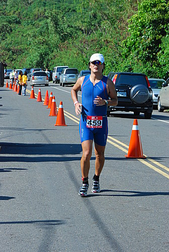
已經跑步跑到有點跛腳了
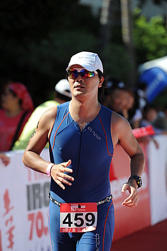
跑步跑到激凸
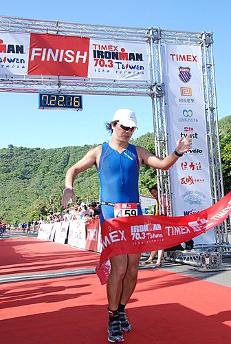
邁向終點，花了7小時22分完賽
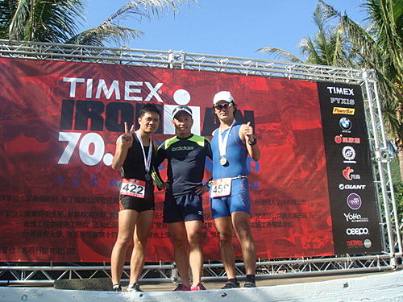
比賽完，河東獅三勇士史蒂芬、賽門和我在頒獎台
上合影
 小獅
小獅